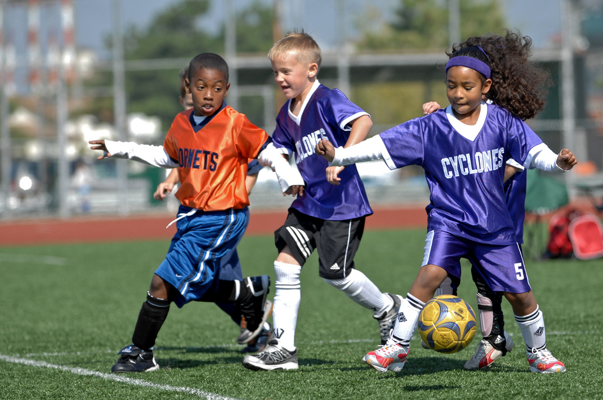
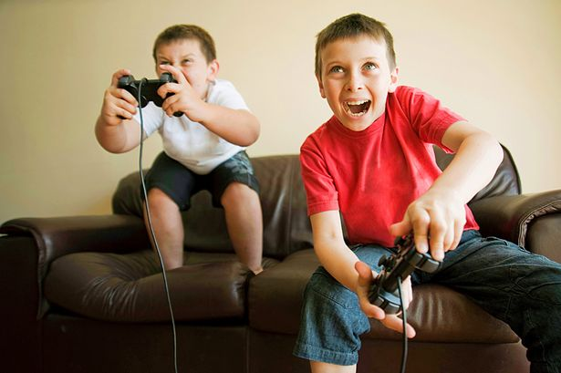
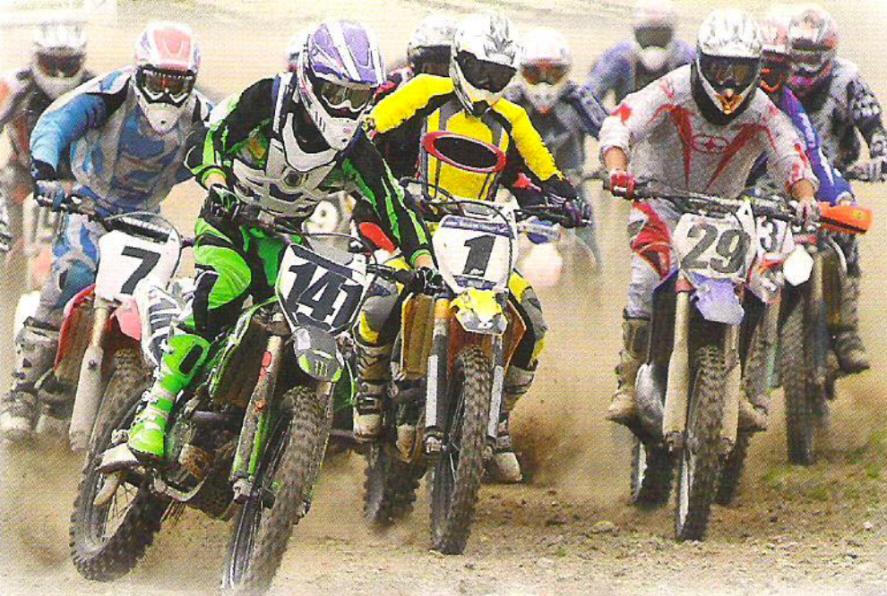

Starting off
Work in pair
- Which of the activities in the photos have you done?
- Who do you think is ...
- the most enjoyable?
- the cheapest?
- the healthiest?
- the most relaxing?
- the least active
- the best one to do with friends?
- the most popular among young people?
- Which would you like to try? Why?


